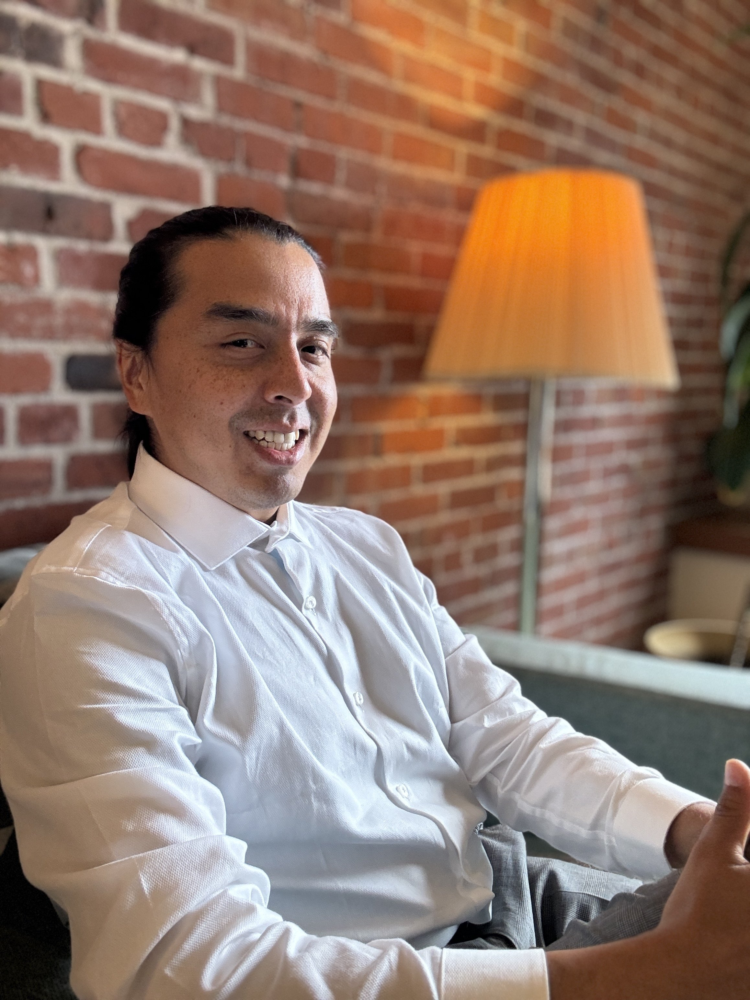

Take an intentional leap toward your joy.
I'm Carlos Encalada, a licensed clinical social worker and psychoanalytic psychotherapist. I work with adults, couples, children, and families — in English y en español.

How I work
Some emotions and experiences are hard to speak, see, and feel. Deep listening means getting involved in how life is right now — and how it has always been, or felt. I really want to know how you experience your life.
My approach draws on psychodynamics, attachment, and your history of developmental and experiential trauma — alongside your culture, identity, and childhood. The process can be vulnerable, frustrating, and liberating. Connection, acceptance, and empathy bring peace of mind.
My psychoanalytic curiosity often turns to the impact of early, pre-verbal life disturbances — helping you connect your suffering to challenging body experiences or intense life events. Hard-to-describe struggles in relationships, cultural identity, career, or life transitions can bring up conflicts from the past.
Therapy is an intimate, organic process that takes time. We usually begin weekly and adjust as we learn what you need. If you're new to this, I encourage you to meet several therapists and find the connection that feels right.
Common concerns I work with: anxiety · depression · trauma · ADHD & neurodivergence · relationship issues & family conflict · racial & cultural identity · life transitions · LGBTQ+ · caregivers · chronic pain · addiction. I also offer consultation for psychotherapists and for those already in therapy.
Is this you?
The problem-solver
An engineer, a techie — capable of untangling complex systems. Yet some emotions and relationships resist being solved. You've maybe even asked the chatbots. Some things need a person.
The creative
An artist or writer who works by intuition and vision. Yet sometimes intuition leads in circles, or toward work you aren't passionate about.
The caregiver
A healer, parent, or confidant whose presence soothes others. Your greatest strength can be your greatest challenge — caring for yourself.
The one in-between
Cross-cultural, interdisciplinary, a translator between worlds. Seeing every perspective sometimes costs more energy than it gives back.
About me
I'm a fully licensed clinical social worker (NY, NJ, PA, WA), currently a candidate in the Adult and Child & Adolescent analytic training programs at IPTAR in New York. I've practiced psychotherapy for over nine years — first in Seattle, now in New York.
For four years I worked as a bilingual community mental-health therapist at Consejo Counseling, and for several more as a Spanish-speaking psychotherapist for caregivers and injured workers in workers'-compensation cases. Most of my work has been with adults in a psychoanalytic frame, in person and via telehealth; I'm expanding my practice to children, couples, and families.
Before psychotherapy, I studied Computer Science at MIT, served in the Peace Corps in the Dominican Republic, and worked as a professional editor at the University of Chicago. I received my MSW from Smith College School for Social Work in 2012, and recently trained in coding the Adult Attachment Interview.
I've lived abroad in England and the Dominican Republic, and my family is from South America — Colombia and Ecuador, to be specific. These experiences shape how I listen across cultures, languages, and ways of living.
"In the time I have known Carlos, he has consistently demonstrated deep care and unwavering commitment to the people he works with. His passion for the work is not just a professional quality; it permeates every aspect of his life."
— Ryan Miller, MSW, LICSW
En español
Soy trabajador social clínico con licencia completa en Nueva York, Nueva Jersey, Pensilvania y Washington, y candidato en los programas de formación analítica de adultos y niños en IPTAR. Trabajé cuatro años como terapeuta bilingüe en salud mental comunitaria y llevo más de nueve años en consulta privada — primero en Seattle y ahora en Nueva York.
Uso estas prácticas con mi experiencia para enseñar y guiar a individuos a hacer los cambios que desean en su vida. Ofrezco psicoterapia en español, en persona en Manhattan y por telesalud. Mi familia es de Sudamérica — de Colombia y Ecuador. Aquí todos somos bienvenidos.
Fees & logistics
Sessions
$250 per individual session. A sliding scale is available — what you can afford, based on therapeutic need and financial circumstances, is a worthwhile conversation to have with me.
Insurance
I accept NY Workers' Compensation Board and WA L&I workers'-compensation cases. Otherwise I am out of network, and I can provide a superbill (medical receipt) that helps with out-of-network reimbursement.
Location & hours
230 West 13th Street (West Village). Tuesdays 7am–2pm, Thursdays 2pm–8pm, and Fridays 7am–8pm. Telehealth available in NY, NJ, PA, and WA.
Payment
Cash, check, or Zelle.
Take the leap
I see patients in person in Manhattan's West Village and by telehealth in NY, NJ, PA, and WA. New patients are welcome — reach out and we'll find a time to talk.